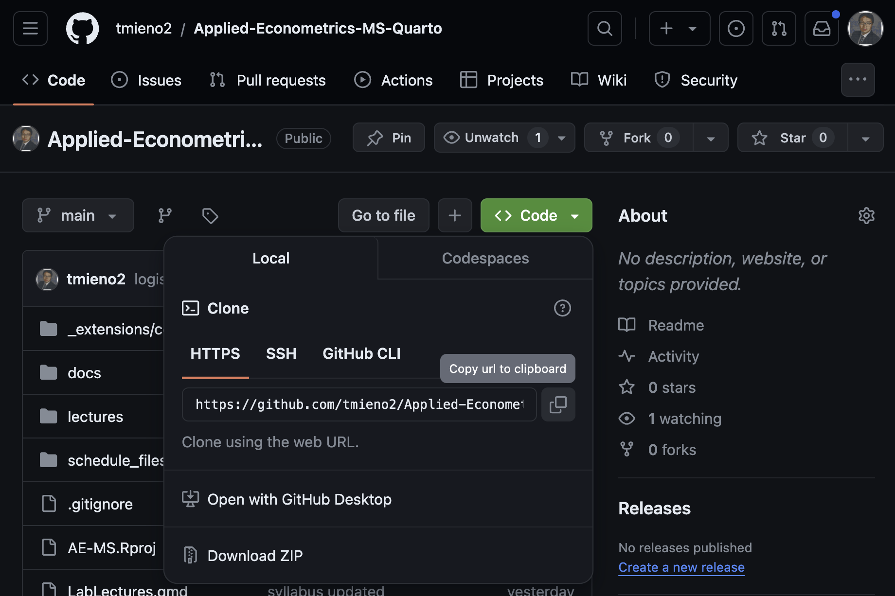
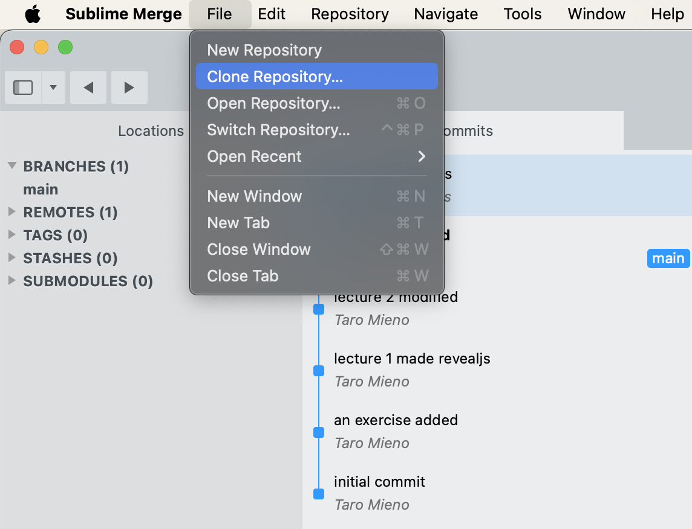
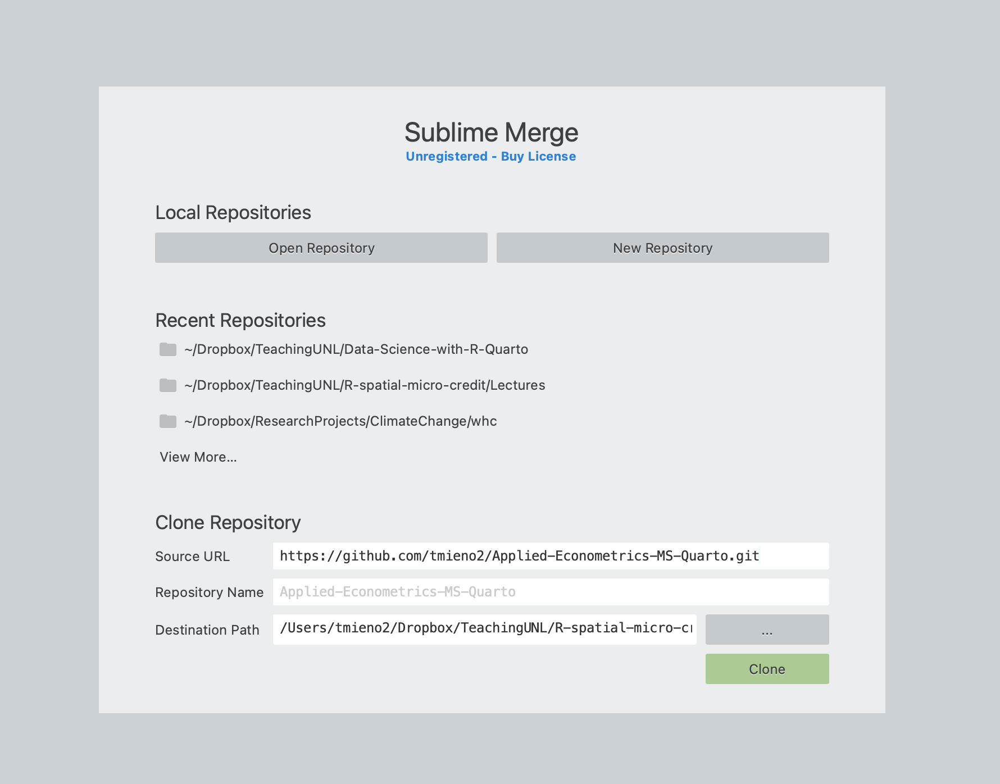

Much of what you will use in this course, and in research, is shared on GitHub: datasets, example projects, other people’s code. This short lecture is about one thing: getting a copy of such a project onto your computer, and knowing where it went.
An AI assistant can run the command that makes the copy. What it cannot do is:
So today is about:
GitHub is built on git, a program that records the history of a project. Recording your own changes, sending them back to GitHub and working with others on the same project are taught in Chapter 6 (lecture 06-2). You do not need any of that today: here, files only come down from GitHub to you.
A repository is a project folder kept by git: the files, plus a record of every change made to them. GitHub is a website that stores repositories online.
Every repository has an address, its URL, for example https://github.com/tmieno2/data-science-course-supplementary-datasets, which holds the datasets used in Chapter 3.
Cloning makes a copy of a repository on your computer: a new folder with all the files in it, named after the repository by default.
The copy remembers where it came from. When the owner changes the files on GitHub, you can bring the changes into your copy instead of copying everything again (called pulling; Chapter 6).
GitHub also offers Download ZIP, which gives you the files once.
| Clone | Download ZIP | |
|---|---|---|
| You get the files | yes | yes |
| The copy knows where it came from | yes (a hidden .git folder inside it) |
no |
| You can bring in later changes | yes | no; download again |
| Needs a git program | yes | no |
For a course whose files are updated during the term, clone. For a file you need once, a download is fine.
Important
Conditions 1 to 3 fail with an error message. Condition 4 fails silently: the clone works, and the folder sits somewhere you never look. That is the mistake to guard against.
On the repository’s page on GitHub, click the green Code button, keep Local and HTTPS selected, and click the copy button next to the address (two overlapping squares).

In Sublime Merge: File, Clone Repository.


... button), for example a courses folder you keep all course material in.An agent in your editor or terminal clones with one command. Whatever the program around it, the command follows this pattern:
| Part | What it is | Required? |
|---|---|---|
git clone |
The git program, asked to clone | Yes |
<URL> |
The repository’s address | Yes |
<folder> |
The name of the new folder | No; the default is the repository’s name |
The command makes the new folder inside the folder the terminal is in at that moment. So the agent usually moves there first:
cd (change directory) moves the terminal into a folder; ~ is your home folder. The .git at the end of the URL is optional.
git clone, and makes the copy an R Project.gh repo clone tmieno2/data-science-course-supplementary-datasets: GitHub’s own command-line program, same result.The agent knows the command. Your request supplies:
Clone the repository <URL copied from the GitHub page> into the folder
<full path of the folder it should go into>. Do not change any
file in it. When done, tell me the full path of the new folder and list
the files at its top level.This request asks the agent to run a command once, not to write analysis code, so it does not end with the closing instructions used for code (lecture 02-1).
| Check | How | Expected | |
|---|---|---|---|
| 1 | The folder is where you chose | Open the destination folder in Finder (Mac) or File Explorer (Windows) | A new folder named after the repository |
| 2 | It holds the same files as on GitHub | Compare its top level with the file list on the GitHub page | The same names |
| 3 | It is a clone, not a download | Show hidden files (Mac Finder: Cmd + Shift + period; Windows: View, Show, Hidden items) and look inside | A .git folder |
| 4 | You will find it again | Write its full path down, for example in a note |
For the datasets repository, the GitHub page lists the files to expect: the corn_yields files in several formats and a readme.md.
| Message | What it means |
|---|---|
Repository not found |
The URL is wrong, or the repository is private and you are not signed in or not invited |
destination path '...' already exists and is not an empty directory |
You cloned it before into the same folder. Use that copy, or choose another destination |
| A message that git is not found or not recognized, or a window offering to install command line tools (Mac) | Git is not installed. Use Sublime Merge, or ask the AI how to install git on your system |
If Sublime Merge opened the repository but you cannot find the folder: with the repository open, choose Repository, Open Containing Folder.
| You need to understand | The AI or Sublime Merge can do |
|---|---|
| A repository is a project folder kept by git; GitHub stores it online | |
| Cloning copies it to your computer and keeps the link back, so later changes can be pulled; a ZIP download does not | |
| Which repository you need, and its URL | The git clone command |
| Where the copy should go, chosen on purpose | Moving the terminal to that folder |
| That the copy is there, complete, and written down | Listing the files |
Recording, sending and sharing your own changes is Chapter 6.